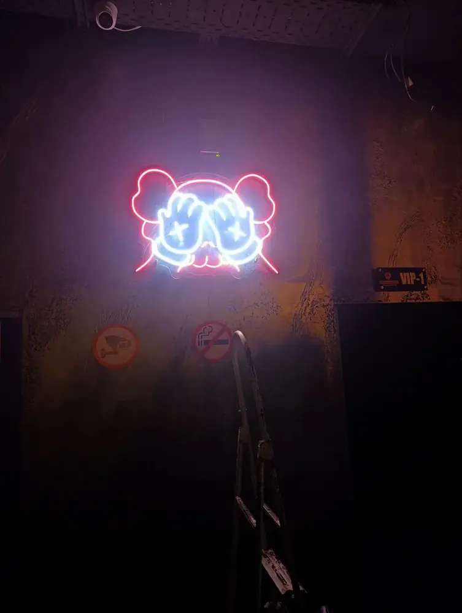
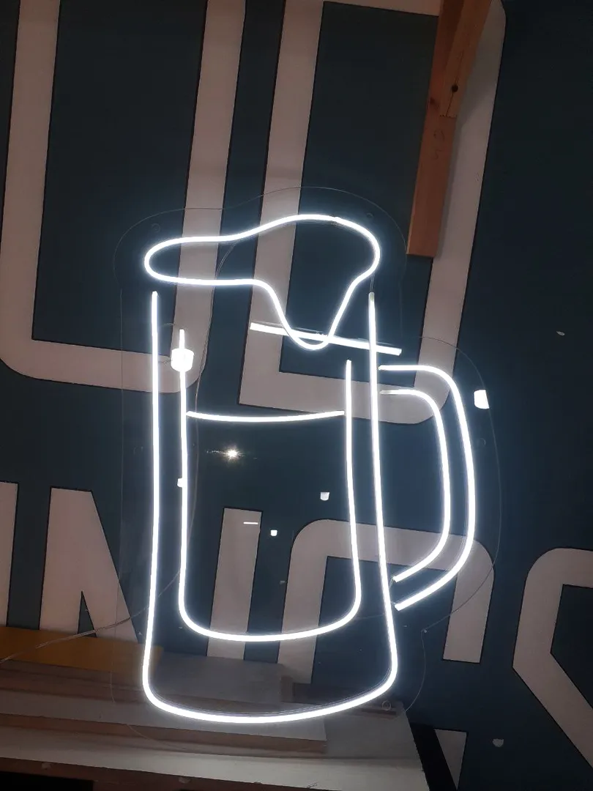

Световые объёмные буквы
CHODIRПодробнее о проектеCOLOURWAY DESIGN · ТАШКЕНТ
Буквы и логотипы со светом для заметного оформления фасада или интерьера.
Буквы, логотипы и световые фигуры для фасадов и интерьеров. Работаем с акрилом, металлом, пластиком и гибким неоном.
Обсудить проектУточняем задачу и место размещения, готовим визуальное решение, согласовываем материалы, производим и монтируем изделие.
Стоимость зависит от размеров, конструкции, материалов и особенностей монтажа. Точные параметры согласуем после получения заявки.
Создать макет и отправить заявкуСветовые объёмные буквы
CHODIRПодробнее о проекте
Белые объёмные буквы и фирменный знак на стене с вертикальными деревянными рейками.
SAMAR Developers
Золотистые буквы и знак на фоне зелени. Подсветка выделяет логотип среди листьев.
Silkway Health Technology
Фигурный неон для интерьера
Подробнее о проекте
Красный контур и холодное белое свечение выделяют фигуру на тёмной стене.

Белый световой контур кружки закреплён на прозрачной основе.
Откройте фотографию, чтобы рассмотреть работу целиком.